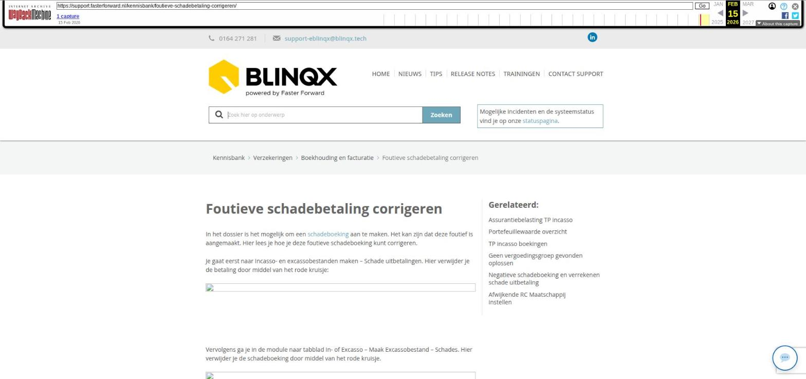

Document uploaden en verwijderen in een dossier

Tekstinhoud
Document uploaden en verwijderen in een dossier
Met een klant wissel je vaak informatie uit via documenten. Deze documenten voeg je aan je dossier toe om een compleet beeld te houden van alle informatie.
Document toevoegen op verschillende manieren
Document handmatig toevoegen aan dossier
Meerdere documenten tegelijk toevoegen
Document toevoegen aan schademelding
Documenten verwijderen
Document toevoegen op verschillende manieren
Een document toevoegen aan een dossier kan kan op verschillende manieren:
Door een e-mail met bijlagen te verwerken.
Doordat de klant deze via de Digimap of Uwkluis geüpload heeft.
Indien je gebruik maakt van de Aplaza koppeling komen er veel documenten binnen via Aplaza. Wanneer het Aplaza bericht verwerkt is, vind je het document terug in het dossier in het tabblad documenten.
Door een document handmatig te uploaden in het dossier.
Door een document in te scannen met je scanner.
De maximale grootte om het bestand te kunnen uploaden is 30MB. Tip: orden je documenten door de mappenstructuur te gebruiken.
Document handmatig toevoegen aan dossier
Om een document handmatig toe te voegen aan het dossier kan je onderstaande stappen volgen:
Ga naar het tabblad documenten en op de knop 'Document toevoegen'.
Selecteer vervolgens het bestand via de knop 'Bestand kiezen' of sleep het bestand vanaf de map op jouw computer hier naar toe.
Vervolgens kan je alle velden naar wens invullen.
Naam: hier wordt standaard de naam van het document al overgenomen, deze kan je echter naar wens wijzigen.
Map: kies hier de map waar je het document onder wilt hangen
Stuk: indien het document een stuk uit de stukkenlijst betreft, kan je hier gelijk het juiste stuk selecteren en is het document gelijk gekoppeld.
Categorie: indien gewenst kan je hier een categorie aangeven waar het soort document onder valt. Hierdoor wordt het drop-down menu bij het volgende veld 'soort document' beperkt.
Soort document: dit is een verplicht veld. Automatisch wordt het document ingedeeld onder Anders, n.l. Indien gewenst kan je dit aanpassen naar een ander soort document.
Beoordeling Intern: indien je het document bij 'Stuk' gekoppeld heeft kan je het stuk gelijk beoordelen.
Omschrijving: vul hier een omschrijving in.
Vervolgens heb je de mogelijkheid om een document gelijk aan een product te koppelen. Vink het product aan waar deze aan gekoppeld dient te worden.
Klik linksboven op opslaan. Het document is nu toegevoegd aan het dossier en terug te vinden in het tabblad Documenten.
Let op! Indien je een document hebt gekoppeld aan een gearchiveerd product dien je in het tabblad documenten links 'Toon gearchiveerde contracten' aan te vinken om de documenten te zien.
Let op! Het is mogelijk om door middel van rechten documenten die aan een bepaald product zijn gekoppeld af te schermen voor bepaalde gebruikers. Middels deze rechten kan je het zo instellen dat de gebruiker bijvoorbeeld wel het hypotheekproduct in kan zien, maar niet de documenten die hieraan gekoppeld zijn.
Meerdere documenten tegelijk toevoegen
Het is mogelijk om meerdere documenten (max. 25) in 1x tegelijk te uploaden in het dossier. Het Soort document wordt dan van alle documenten Anders, n.l. Dit kan je niet per document, tijdens het uploaden, instellen. Na het uploaden is het mogelijk om de documenten aan te passen en te koppelen aan producten en/of diensten.
Document toevoegen aan schademelding
Het is mogelijk om documenten te koppelen aan een schademelding. Dit kan echter niet via het tabblad Documenten in het dossier. De documenten voeg je toe onder de schademelding zelf. Hier lees je er meer over.
Documenten verwijderen
Vanuit het klantdossier kan je alleen de documenten uit de blauwe mappen verwijderen. Documenten kan je één voor één verwijderen door te klikken op het rode kruisje achter het document. Indien je meerdere documenten tegelijk wilt verwijderen dan kan je deze selecteren door middel van de checkbox voor het document en vervolgens te klikken op het prullenbakicoon.
Verwijderde documenten komen terecht in de prullenbak. Documenten blijven 30 dagen in de prullenbak staan, zodat je het verwijderen ongedaan kan maken. Daarna is het document definitief verwijderd. Indien dit niet het geval is dan staat het proces voor het verwijderen van de documenten (en e-mails) in de prullenbak niet aan. Stuur dan een e-mail naar support-eblinqx@blinqx.tech.
Door te klikken op Prullenbak kom je in de prullenbak terecht. Door middel van het ronde pijltje kan je hr document uit de prullenbak halen en terugzetten in de blauwe mappen. Wil je meerdere documenten terugzetten dan vink je de checkbox ervoor aan en klik je op 'Prullenbak legen'.
Laatste update: 15 oktober 2025
Was deze informatie nuttig?
Ja Nee